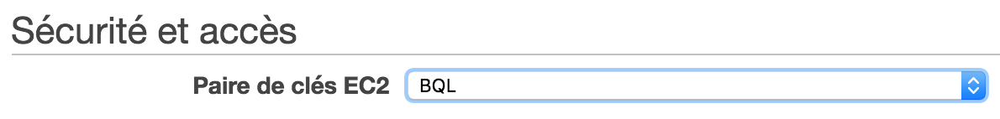
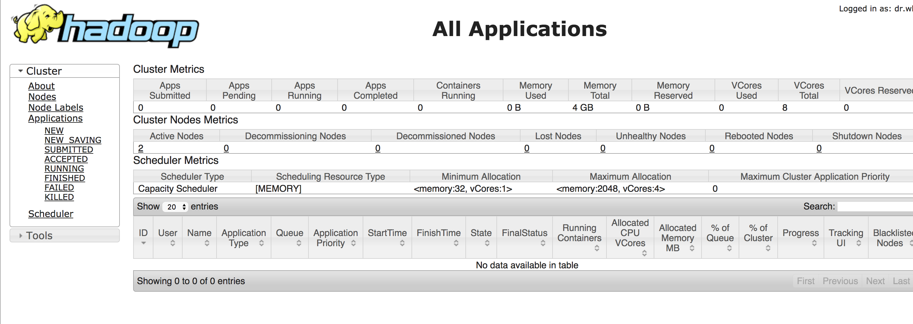
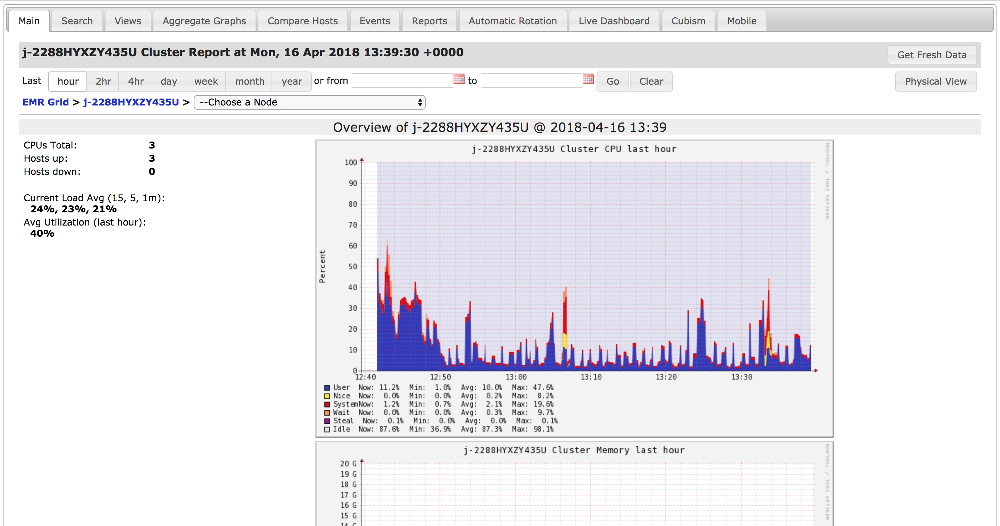
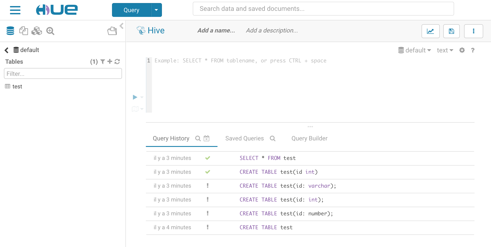

AWS EMR
Amazon Web Services - Elastic Map Reduce is a web service that allows the user to setup a cloud cluster in order to perform MapReduce tasks. Nodes are automaticaly connected (either physicaly or logicaly), the operating system is installed and a big data framework is installed. This page details how to deploy a Hadoop Cluster on AWS in order to perform MapReduce algorithms.
Creating the cluster
In the Elastic Map Reduce service (EMR), click the create a cluster button. There is only one page to choose the configuration.
First, we need to configure the logical layer that runs on the cluster.
- Choose a name for the cluster
- Select the
clustermode - Select the
Core Hadooplogical layer
We can see that other frameworks are available, but the basic Hadoop is enough for this project
After selecting the logical layer, we need to choose the number and type of nodes to run in the cluster. The number of nodes should not be even but odd instead, in order to have a master.
To get more informations about the AWS instances types, you get read this page
Finaly, we need to create the cluster using a SSH key pair in order to connect to it later. Create the SSH key pair in the EC2 service.

Executing the algorithm
When the cluster is up, you can run your algorithm by uploading Java code.
- Select the cluster you just created
- Go to the
Stepspage - Click the
Add stepbutton
You can now upload your Java code in the form of a .jar file. You can also specify arguments to add on the execution command
When a step is added, you can run the algorithm on the cluster by clicking the
Run stepsbutton
Monitoring
When your cluster is running, you can use SSH port forwarding to access Hadoop websites that allow to detail the health and how is going the cluster. You can find how to access those interfaces in this tutorial.. You'll need to open your SSH tunel before.
For general informations about the cluster, Hadoop is displaying a simple interface about the nodes.

If you need more specific informations about performances, Ganglia is a good monitoring solutions installed on the cluster.

Finaly, if you need to run custom queries and interact with the cluster via a simple interface, you can use Hue.

SSH Connection
Using the cluster via the web interface is interesting for development, but is not the solution we need for the BQL project. Instead, we would like your local relational database to interact with the cluster via the internet?
Connecting to the master node of your cluster is detailed in this tutorial. The idea is to get the host address in your AWS console (EMR service), and use a pair of SSH keys to authenticate your machine. By creating a SSH tunnel to the master node, you can run the project and submit Hadoop jobs via port forwading.
Then, you can adapt the Hadoop cluster in the Hive class in order to make the database interact with the remote Hadoop cluster.